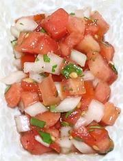
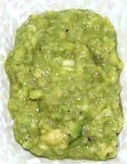
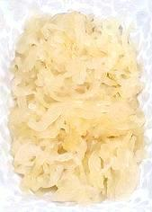
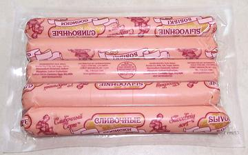
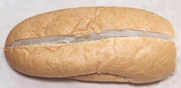
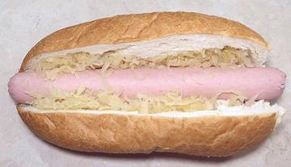
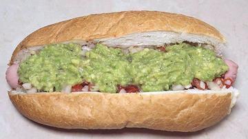
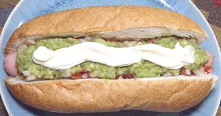

SAFARI
Users
Condiments
The quantities given here should make 4 to 5 Completos.
  
Salsa
(20 minutes)|
9
4 1 1/2 1/3 1/4 1/2 |
oz
oz T T t t T |
Tomato
Onion Lemon Juice Olive Oil Salt Pepper Cilantro |
|
Avocado
(10 min)|
2
1 1/2 1/3 1/4 |
med
T T t t |
Avocado, ripe
Lemon Juice Olive Oil Salt Pepper |
|
Sauerkraut
(5 min)| 1/2 | c | Sauerkraut |
|
Mayonnaise
(5 min)| ar | Mayonnaise |
|
Assembly
- (15 min - once dogs are cooked)Salchicha (Hot Dog)
 In Chile, the Dogs are a little larger around and quite a bit longer than those common in North America. They usually project just a little from both ends of the bun. "Bun Length" (5-1/2 inches) is the absolute minimum length. Fortunately, here in Los Angeles, I was able to find these 7 inch Russian style Dogs from New York.
Pork Dogs are preferred, but if you religion forbids, you can use Beef
Dogs. The Dogs are usually boiled for about 10 minutes, but you can cook
them by any means you prefer. They should be hot when tucked into the bun.
Bread
 Completos are considerably larger than American Hot Dogs, so in Chile there are special breads just for them (pan de completo). Our Hot Dog Buns just can't withstand the amount of toppings used. I use moderate size French Rolls that are soft with thin crust. If you have "Bun Length" Dogs, look for shorter rolls. Unacceptable are dense "artisan breads" with thick crusts and strongly flavored grains.
Your buns should be very fresh. Even one day old they start to break up under the stress of sausages and toppings.
Unlike a Vietnamese Banh Me
sandwich, which is cut from one side, these should be cut straight down from
the top to 1/4 inch from the bottom. Like a Banh Me, you can remove some of
the crumb from both sides near the bottom to make room for the salchicha
(hot dog). This will help prevent the bun from splitting.
First Filling
 First the Bun is cut down from the top to 1/4 inch of the bottom. I find a thin, razor sharp Santoku vegetable slicing knife works far better on bread than serrated bread knives. Some crumb can be removed from both sides near the bottom to make room for the Dog.
Next, the Dog is dropped into the Bun. Make sure it is not too wet as that would cause the bun to split in half.
Spread a little Sauerkraut along both sides of the Dog. Yes,
Sauerkraut is a popular Chilean ingredient.
Second Filling

Drain the Salsa, and spread it across the Dog for the full length of the Bun. At this point some Hot Sauce can be applied if desired.
now spread the Avocado Paste over the Salsa for the full length
of the Bun.
Final Topping
 Now apply a wavy line of Mayonnaise over the Avocado layer. As mentioned. if, for some reason, you reject Mayonnaise, you can apply a thin stream of Ketchup and a thin stream of Mustard criss crossing the Avocado layer, and each other.
Serve the Completo immediately.